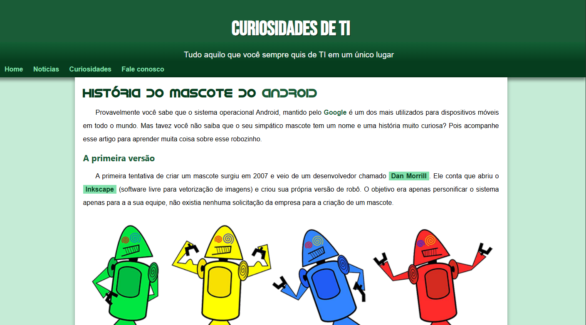
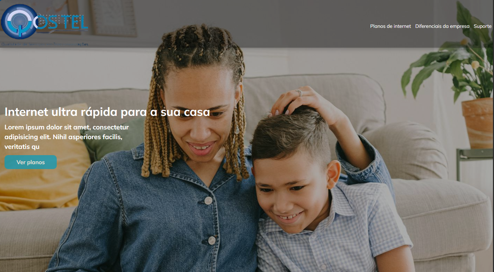
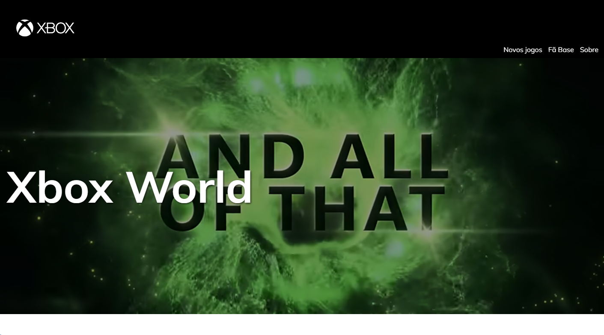

Josimar Martins
Desenvolvedor backend e solucionador de problemas.

Sobre mim
Sou um estudante do último ano do curso técnico médio de Informática, com 6 meses de experiência em redes de computadores na empresa QoS Tel. Experiência na instalação e manutenção de infraestruturas de rede em ambientes residenciais e empresariais, incluindo organizações de grande dimensão como a Lilás e o Shopping Hoji Ya Henda. Conhecimento na configuração de antenas de rede (Tenda e MikroTik) e roteadores de diversas marcas. Atuação complementar em desenvolvimento web, com criação de websites para ISP e desenvolvimento de um sistema de gestão de estoque para bares de pequena dimensão.
- Nome: Josimar Martins
- Idade: 20
- Experiência: 6 mêses
- Tel: +244 940 121 011
- Facebook: Josemar da Conceição
- Endereço: Luanda, Camama
- Trabalhar / Prestar Serviço: Disponível
Minhas Skills
MySQL
MySQL é um Sistema de Gerenciamento de Banco de Dados Relacional (SGBDR) de código aberto.
80%Qualificações
Trajectória Profissional
Técnico de Redes
Atuo como técnico de redes de computadores na QoS Tel, onde sou responsável pela instalação, configuração e manutenção de dispositivos de redes de computadores
Trajectória Académica
Técnico de Informática
Estou a cursar o último ano do curso técnico médio de informática no Colégio Mundo Novo, onde pude construir uma base sólida em computação.
Meus projectos

Projecto Portfólio
Descrição
Projecto de um portfolio desenvolvido no último modúlo do curso de HTML5 e CSS3 do Curso em Video.

ViajaMais
Descrição
Site de destinos de viagens, criei com o intuito de testar aplicar os conceitos de responsividade e animações com CSS puro.

StockFlow
Descrição
Projecto de gestão de estoque de um bar voltado para venda de bebidas alcoólicas, refrigerantes, canabis entre outros.

Projecto android
Descrição
Página desenvolvida durante o último capítulo do modúlo 2 do curso de HTML5 e CSS3 do Curso em Video.

QoS Tel Landing Page
Descrição
Landing Page desenvolvida para a QoS Tel. Ela é totalmente responsiva e otimizada para ser executada em qualquer dispositivo com um navegador web.

Xbox
Descrição
Web Site desenvolvido para mostrar a evolução do Xbox nestes mais 20 anos do console e serviu também para mim treinar flex box e animações com o CSS.